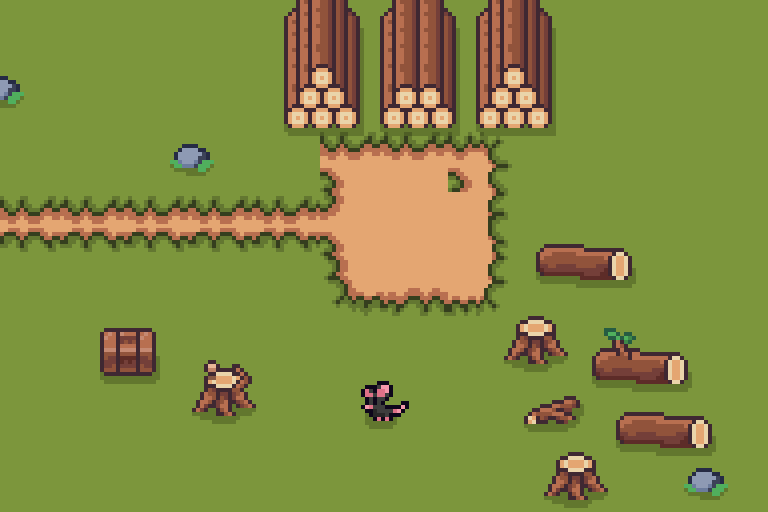

The three timber stacks sit one tile higher, beside the path edge. The stray grass in the bottom-center path tile is removed. Both mice have a slightly quicker scurry and animation; the logging mouse follows a clear grass loop away from the timber, logs and stumps.

22-second Play-mode capture. The complete logging mouse route was checked against terrain and nearby prop bounds with extra clearance.